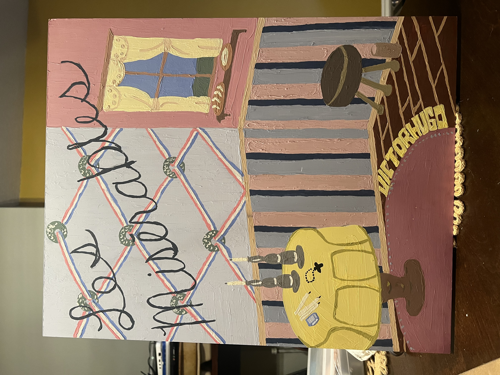

2D Design Fall 2025
16 x 24 Acrylic on Canvas Board

Materials Used:
- Acrylic Paint
- Canvas Board
- Brushes
My Process
- Search for Inspiration
- Create Sketch
- Mix Paints
- Paint First Pass
- Paint Second Pass
- Add Highlight and Details
Project inspired by book. I chose to create a detailed version Les Misérables, highlighing important symbols from the French Revolution, and made sure to create space for each element.